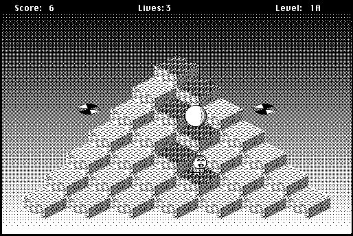

Download
Bert-114.zip (291K) Bert 1.1.4 repackaged into a zipped hfs disk image and checksum file. The disk image can be mounted with Mini vMac.
Bert-114.hqx (418K) Bert 1.1.4 in the original format.
copyright: Ingemar Ragnemalm
mod date: Aug 30, 2000
license: free for non-commercial use
official url :
Miscellaneous Games by Ingemar Ragnemalm
"Resembles the old arcade classic Q*Bert" and "tested under System 6.0.7 and 7.1".

If you find these downloads useful, please consider helping the Gryphel Project, which hosts them.
Here are the md5 checksums for the downloads, signed with Gryphel Key 5:
--------- GRY SIGNED TEXT --------- 00f14f5448ef27a6c77e3c68fd19d882 Bert-114.zip 09fdab6d087e1d7d3b14d9101ee66187 Bert-114.hqx ------- BEGIN GRY SIGNATURE ------- Gry/4Xa8CFcUzxdN/MeWGseAqDsaKQzOYKGT/Mings734Y76XGCy2bPqVuqJ1mnX uR9BEV//uM+t3om2TtsB4Gpqn9qam6iHUonx6LbWWUoHMJUAPh5N4k8X7+xGACFa rNCBZL1b7tQt7U38Ph4fjldl+uk4hwIMKj6RIOtEDMPFVoaI/qWkTUVC/9VQSDz9 -------- END GRY SIGNATURE --------